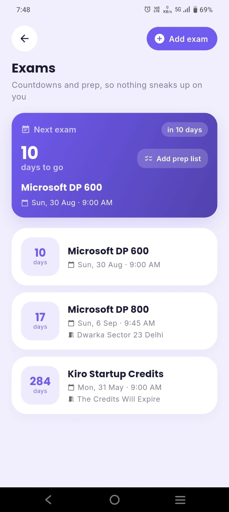

Quick answer
Neither wins for everyone. Paper is better if writing helps you remember, your timetable rarely changes and you plan at a desk — research suggests handwriting a schedule can make it slightly easier to recall. Digital is better if your classes rotate, you juggle many deadlines, or you need reminders and exam countdowns — paper can't alert you. Many students do best with a hybrid: an app for the timetable and deadlines, paper for today's to-do list. Not sure? Take the 1-minute quiz.
The paper-versus-app argument usually turns into "handwriting is better for your brain" against "apps are more convenient." Both are partly true, and neither settles the question. The best student planner is the one you'll open every day, and that depends on how your weeks actually look.
What the research actually says
Writing a schedule by hand may help you remember it — a little. In a 2021 study from the University of Tokyo, young adults read a conversation about class schedules and appointments and wrote them down in a paper notebook, on a tablet or on a smartphone (Umejima et al., 2021). The paper group finished writing about 25% faster, answered the simpler recall questions more accurately, and showed stronger activity in memory- and language-related brain regions when they were tested an hour later. The researchers link this to the physical, unique details of a paper page — where on the page you wrote something, the crossings-out — that act as memory cues.
But the famous "pen beats laptop" result is shakier than it sounds. A widely shared 2014 study found that students who took lecture notes by hand did better on conceptual questions than laptop note-takers (Mueller & Oppenheimer, 2014). Later direct replications didn't find a reliable advantage on those questions (Morehead, Dunlosky & Rawson, 2019; Urry et al., 2021). Those studies are about lecture notes, not planners, but they're a useful warning against treating handwriting as magic.
What this means for you: paper has a real but modest memory edge for things you write down. For a planner, though, the bigger question is usually practical — will you see the deadline in time? A plan you remember well doesn't help if it lives in a notebook you left at home.
Paper planners: pros and cons
Pros
- Easier to remember what you write. See the research above.
- No distractions. Opening a notebook doesn't show you twelve notifications.
- Fast and flexible. Arrows, doodles, quick sketches of a project plan — no menus.
- Satisfying to tick off. Crossing out a task by hand is a small, real reward, and some students simply plan more when it feels personal.
- No battery, no login. Works in any exam hall, library or power cut.
Cons
- No reminders. The biggest weakness: a paper planner can't warn you that an assignment is due tomorrow.
- Repeating classes by hand. You rewrite the same timetable every week, or rely on a separate sheet.
- Messy when plans change. Rescheduled labs, rotating timetables and moved exams quickly fill pages with crossings-out.
- Easy to lose, no backup. Lose the notebook and you lose the semester's plan.
- Has to come with you. Planning only works when the planner is in your bag.
Digital planners: pros and cons
Pros
- Reminders and countdowns. Alerts before classes and deadlines, and live "days left" for each exam.
- Recurring classes. Enter your timetable once; it repeats every week, including rotating A/B weeks in good apps.
- Easy to change. Drag a task to tomorrow without a mess.
- Always with you on your phone, backed up and synced.
- Everything connected. Student planner apps can link timetable, tasks, grades and attendance, which paper can't do. In ClassTrack, for example, the same timetable powers class reminders, your attendance percentage and the bunk calculator.
Cons
- Distraction risk. Planning on your phone puts social media one swipe away. Mute non-essential notifications.
- Over-tinkering. Endless templates and setups can replace actual planning — a common trap with highly customisable tools.
- Notification fatigue. Too many alerts and you start ignoring all of them. Keep only class and deadline reminders.
- Weaker memory cues. Typed entries all look the same, which may make them a little harder to recall.
Side-by-side comparison
| What matters | Paper planner | Digital planner |
|---|---|---|
| Reminders before deadlines | No | Yes |
| Recurring weekly classes | Rewrite by hand | Automatic |
| Remembering what you planned | Slight edge | Good |
| Distraction-free | Yes | Depends on your phone habits |
| Changing plans | Messy | Easy |
| Backup if lost | No | Yes, with sync |
| Exam countdowns, GPA, attendance | Manual maths | Built into student apps |
| Cost | Price of a diary each year | Many good free apps |
Which students suit which
A paper planner fits you if: your timetable is the same every week, you mostly study at one desk, you have a handful of big deadlines rather than dozens of small ones, and writing things down genuinely helps you think.
A digital planner fits you if: your classes rotate or change often, you have many assignments, labs and quizzes, you commute or study in different places, your college has attendance rules you need to track, or you've missed deadlines before because you didn't see them coming.
In practice, most college students with a busy timetable end up needing reminders for at least part of their planning — which is where the hybrid comes in.
The hybrid setup (best of both)
A hybrid only works if each tool has one job and you never copy everything twice:
- App = the master record. Timetable, every exam and deadline, and reminders. This is the thing you trust to be complete.
- Paper = today. Each morning, write your top three tasks and a few small ones on a sticky note or a page. Cross them off by hand.
- Sunday = the bridge. During your 10-minute weekly setup, update the app with new deadlines and pick the week's priorities.
You keep paper's focus and memory benefits for the day's work, and the app catches everything you'd otherwise forget.

Quiz: paper, digital or hybrid?
Which planner suits you?
Answer 6 quick questions. Nothing is stored.
Key takeaways
- Handwriting a schedule can make it slightly easier to remember, but the effect is modest and lecture-note studies have mixed results.
- Paper's biggest weakness is that it can't remind you; digital's biggest risk is distraction.
- Paper suits stable timetables and desk planners; digital suits busy, changing weeks.
- A hybrid — app for deadlines, paper for today — gives most students the best of both.
- Whatever you pick, use one master record and a short weekly routine.
Going digital? Start free
ClassTrack is a free student planner app with your timetable, tasks, reminders, exam countdowns, focus timer and attendance in one place. Snap your timetable and it's set up in seconds.
Get ClassTrack freeFrequently asked questions
Is a paper or digital planner better for students?
Do you remember more when you write a plan on paper?
What are the disadvantages of a digital planner?
What are the disadvantages of a paper planner?
Can I use both?
Sources
- Umejima, K., Ibaraki, T., Yamazaki, T., & Sakai, K. L. (2021). Paper notebooks vs. mobile devices: brain activation differences during memory retrieval. Frontiers in Behavioral Neuroscience, 15, 634158. Read the study.
- Mueller, P. A., & Oppenheimer, D. M. (2014). The pen is mightier than the keyboard: advantages of longhand over laptop note taking. Psychological Science, 25(6), 1159–1168.
- Morehead, K., Dunlosky, J., & Rawson, K. A. (2019). How much mightier is the pen than the keyboard for note-taking? A replication and extension of Mueller and Oppenheimer (2014). Educational Psychology Review, 31, 753–780.
- Urry, H. L., et al. (2021). Don't ditch the laptop just yet: a direct replication of Mueller and Oppenheimer's (2014) Study 1 plus mini meta-analyses across similar studies. Psychological Science, 32(3), 326–339.